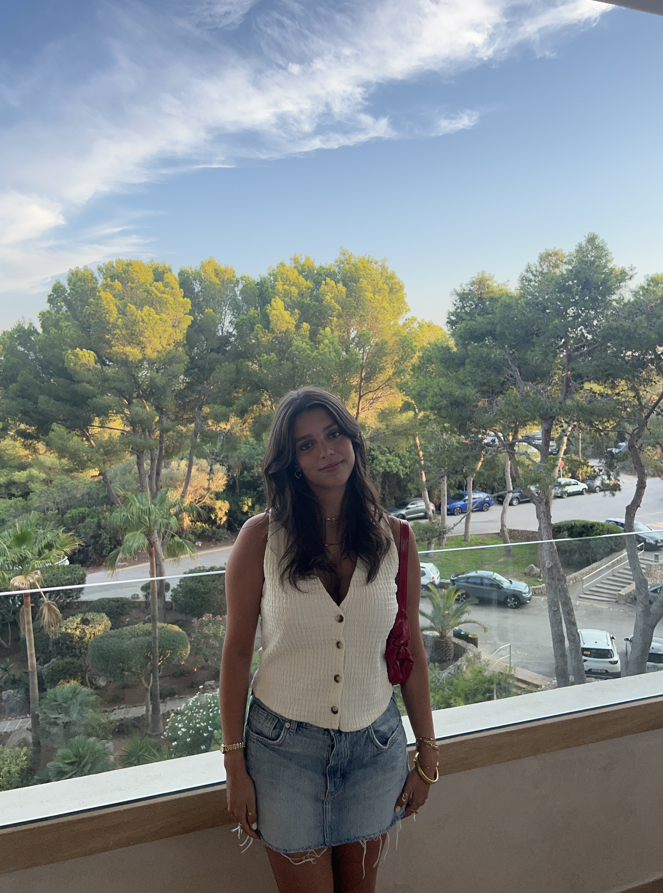

Chamo-me Catarina Bastos e estou no 3º ano de Engenharia Informática e Computação na Faculdade de Engenharia do Porto. Possuo conhecimentos de desenvolvimento web, análise de dados, diversas linguagens de programação resolução de problemas.
Sou uma pessoa ambiciosa que está sempre à procura de novos desafios, e procuro uma oportunidade para aplicar e aprofundar os meus conhecimentos e colaborar com equipas dinâmicas para resolver problemas do mundo real.
Plataforma de serviços freelance que permite aos utilizadores oferecer e contratar serviços de forma simples e intuitiva. Inclui pesquisa e filtragem avançadas, descrições detalhadas de serviços, avaliações de utilizadores e sistemas de feedback. O website foi desenvolvido com uma base de dados SQLite para gerir utilizadores, serviços, transações, mensagens e categorias, enquanto o PHP é responsável pela geração dinâmica de conteúdo. O design responsivo é alcançado com HTML/CSS, e o JavaScript (com Ajax) melhora a interatividade através de funcionalidades como pesquisa em tempo real e atualizações assíncronas.
Este projeto, desenvolvido em Minix3, implementa os drivers de I/O de temporizador, teclado, rato e vídeo para criar um jogo de labirinto composto por 3 níveis. Neste jogo, o jogador navega por uma sala cheia de inimigos, obstáculos e colecionáveis como corações e estrelas. O jogador pode mover-se e interagir com o ambiente para superar desafios, como derrotar monstros, apanhar estrelas, obter a chave para abrir a porta para o nível seguinte e usar velocidade para atravessar paredes especiais. O jogo também inclui um sistema de vidas que permite ao jogador recuperar vidas caso perca alguma ao colidir com monstros ou bombas.
Este jogo, desenvolvido em Java, é uma aventura plataforma para 2 jogadores, onde cada um navega por uma sala cheia de inimigos, obstáculos e itens colecionáveis. Os jogadores podem mover-se e interagir com o ambiente para superar desafios, além de poderem recuperar mais vidas, tudo trabalhando em conjunto. O jogo inclui um sistema de vidas, controlos suaves e diversos obstáculos para proporcionar uma experiência envolvente.
MyPantry é uma aplicação desenvolvida em Flutter, utilizada para gerir os itens da sua despensa, reduzir desperdícios e também aproveitar os alimentos, pesquisando novas receitas ou até partilhando as suas próprias. Nunca mais terá de se perguntar se ainda tem isto ou aquilo em casa — a sua despensa estará sempre no seu bolso. No futuro, pretendemos aumentar a nossa base de utilizadores e tornar a aplicação um ponto de encontro para todos os foodies que queiram criar, partilhar e explorar! Para além disso, queremos tornar tudo mais simples para si na cozinha.
Este projeto foi desenvolvido para resolver o Problema de Otimização de Paletização em Caminhões de Entrega, uma versão real do Problema da Mochila 0/1. Para isso, foram implementados diversos algoritmos (força bruta, programação dinâmica, aproximação e ILP) para maximizar o lucro respeitando restrições de peso e comparar diferentes eficiências e desempenhos. Além disso, foram criadas representações gráficas dos diferentes tempos e espaços obtidos.
Este projeto consiste numa ferramenta de planeamento de rotas que gera uma estrutura de dados semelhante a um grafo a partir de ficheiros .csv contendo localizações e distâncias entre essas mesmas localizações. A partir dessa estrutura, a ferramenta recebe inputs relacionados com as preferências de planeamento de percurso e apresenta a rota ótima.
Este projeto consiste numa base de dados para gerir filmes, séries e atividades dos utilizadores numa plataforma de rastreamento audiovisual, permitindo criar listas personalizadas, seguir outros utilizadores e avaliar conteúdos. O sistema organiza filmes e séries, com temporadas e episódios, associando categorias, faixas etárias, participantes (atores e diretores) e plataformas de streaming. O objetivo é proporcionar uma experiência personalizada, eficiente e organizada na interação com o conteúdo audiovisual.
A primeira etapa deste projeto consistiu no ficheiro SVGElements.hpp, onde foram declaradas classes capazes de ler elementos geométricos "rect", "circle", "ellipse", "line", "polyline" e "polygon". Todas as funções membro foram definidas em SVGElements.cpp. No ficheiro readSVG.cpp, criámos a função void dump, que analisa recursivamente os elementos XML de um arquivo SVG e os armazena no vetor svg_elements, recorrendo a funções auxiliares. Assim, partindo de um vetor vazio, conseguimos preencher todos os elementos a desenhar com as devidas transformações aplicadas.